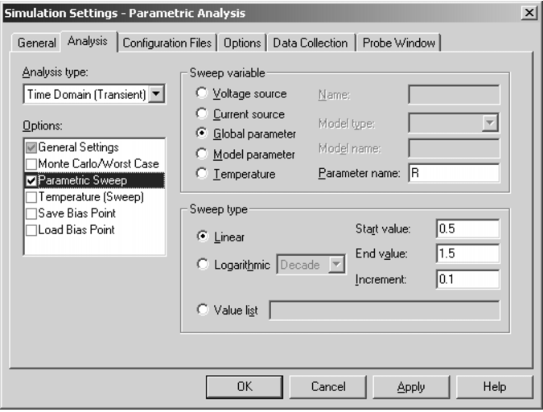
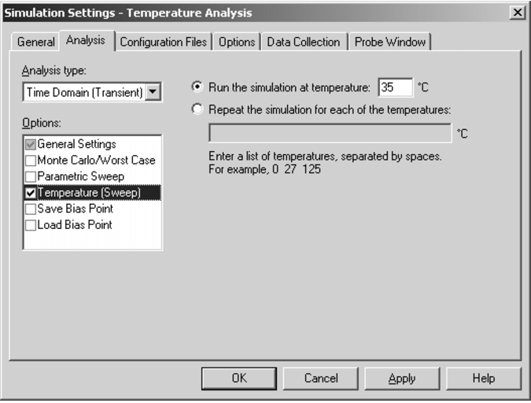

|
|
|||||||||
|
|
|
|
|
|
|
|
|
|
|
This chapter describes how to set up parametric and temperature analyses. Parametric and temperature are both simple multi-run analysis types.
This chapter includes the following sections:
|
voltage source with a DC specification (VDC, for example) |
|
|
current source with a DC specification (IDC, for example) |
|
|
PSpice A/D model |
|
|
global parameter defined with a parameter block (PARAM) |
|
|
In the Simulation Settings dialog box, from the Analysis type list box, select Time Domain (Transient). |
See Setting up analyses for a description of the Simulation Settings dialog box.

Note: Do not specify a DC sweep and a parametric analysis for the same variable.
Parametric analysis performs multiple iterations of a specified standard analysis while varying a global parameter, model parameter, component value, or operational temperature. The effect is the same as running the circuit several times, once for each value of the swept variable.
See Parametric analysis for a description of how to set up a parametric analysis.
This example shows how to perform a parametric sweep and analyze the results with performance analysis.
Use performance analysis to derive values from a series of simulator runs and plot these values versus a parameter that varies between the simulator runs.
For this example, the derived values are the overshoot and the rise time versus the damping resistance of the filter.
The schematic representation for the RLC filter (RLCFILT.OPJ) is shown in Figure 11-1.
This series of PSpice runs varies the value of resistor R1 from 0.5 to 1.5 ohms in 0.1 ohm steps. Since the time-constant of the circuit is about one second, perform a transient analysis of approximately 20 seconds.
Create the circuit in Capture by placing a piecewise linear independent current source (IPWL from SOURCE.OLB). Set the current source properties as follows:
AC = 1a
T1 = 0s
I1 = 0a
T2 = 10ms
I2 = 0a
T3 = 10.1ms
I3 = 1a
Place an instance of a resistor and set its VALUE property to the expression, {R}. To define R as a global parameter, place a PARAM pseudo-component and use the Property Editor to create a new property R and set its value to 0.5. Place an inductor and set its value to 1H, place a capacitor and set its value to 1, and place an analog ground symbol (0 from the SOURCE.OLB library). Wire the schematic symbols together as shown in Figure 11-1.
Run PSpice A/D with the following analyses enabled:
|
print step: 100ms |
|
|
swept var. type: global parameter |
After setting up the analyses, start the simulation by choosing Run from the PSpice menu.
After performing the simulation that creates the data file RLCFILT.DAT, you can calculate the specified performance analysis measurements.
When the simulation is finished, a list appears containing all of the sections (runs) in the data file produced by PSpice. To use the data from every run, select All and click OK in the Available Selections dialog box. In the case of Figure 11-2, the trace I(L1) from the ninth section was added by specifying the following in the Add Traces dialog box:
-I(L1)@9
Note: To display the Add Traces dialog box, from the Trace menu, choose Add Trace or click the Add Trace toolbar button .
Figure 11-2 Current of L1 when R1 is 1.5 ohms.
|
|
Click OK. |
PSpice resets the X-axis variable for the graph to be the parameter that changed between PSpice runs. In the example, this is the R parameter.
To see the rise time for the current through the inductor L1, click the Add Trace toolbar button and then enter:
genrise(-I(L1) )
Note: The genrise and overshoot measurements are contained in the PSPICE.PRB file in the <target installation directory>\PSpice\Common directory. For legacy users, there are now two files in the PSpice\Common directory that uses measurement names:
Figure 11-3, shows how the rise time decreases as the damping resistance increases for the filter.
Another Y axis can be added to the plot for the overshoot of the current through L1 by selecting Add Y Axis from the Plot menu. The Y axis is immediately added. Now click the Add Trace toolbar button and enter:
overshoot(-I(L1) )
Figure 11-3 shows how the overshoot increases with increasing resistance.
Figure 11-3 Rise time and overshoot vs. damping resistance.
More than one PSpice run or data section is required for performance analysis. Because one data value is derived for each waveform in a related set of waveforms, at least two data points are required to produce a trace.
Use Evaluate Measurement (from the Trace menu) to evaluate a measurements on a single waveform and produce a single data point result.
You can view a plot of the linear response of a circuit at a specific frequency as one of the circuit parameters varies (such as the output of a band pass filter at its center frequency vs. an inductor value).
In this example, the value of a nonlinear capacitance is measured using a 10 kHz AC signal and plotted versus its bias voltage. The capacitance is in parallel with a resistor, so a trace expression is used to calculate the capacitance from the complex admittance of the R-C pair.
Note: This technique for measuring branch capacitances works well in both simple and complex circuits.
Enter the circuit in Capture as shown in Figure 11-4.
To create the capacitor model in the schematic editor:
.model Cnln CAP(C=1 VC1=-0.01 VC2=0.05)
Set up the circuit for a parametric AC analysis (sweep Vbias), and run PSpice. Include only the frequency of interest in the AC sweep.
Use PSpice to display the capacitance calculated at the frequency of interest versus the stepped parameter.
|
|
From the Trace menu, choose Add Trace or click the Add Trace toolbar button . |
IMG(-I(Vin)/V(1,0))/(2*3.1416*Frequency)
Or add the expression:
CvF(-I(Vin)/V(1,0))
Where CvF is a macro which measures the effective capacitance in a complex conductance. Macros are defined using the Macros command on the Trace menu. The CvF macro should be defined as:
CvF(G)= IMG(G)/(2*3.1416*Frequency)
Note: -I(Vin)/V(1) is the complex admittance of the R-C branch; the minus sign is required for correct polarity.
|
|
Click Next>. |
|
|
Click YatX in the Choose a Measurement list, and then click Next>. |
CvF(-I(Vin)/V(1))
|
|
Click Next>. |
The wizard displays the gain trace for the first run to text the measurement (YatX).
The resultant plot is shown in Figure 11-5.
Figure 11-5 Plot of capacitance versus bias voltage.
|
|
In the Simulation Settings dialog box, from the Analysis type list box, select Time Domain (Transient). |
See Setting up analyses for a description of the Simulation Settings dialog box.
Note: Temperature Sweep is not supported in the Advanced Analysis flow.

For a temperature analysis, PSpice reruns standard analyses set in the Simulation Settings dialog box at different temperatures.
Note: Running multiple analyses for different temperatures can also be achieved using parametric analysis (see Parametric analysis ). With parametric analysis, the temperatures can be specified either by list, or by range and increments within the range.
You can specify zero or more temperatures. If no temperature is specified, the circuit is run at 27°C. If more than one temperature is listed, the simulation runs once for each temperature in the list.
Setting the temperature to a value other than the default results in recalculating the values of temperature-dependent devices. In EXAMPLE.OPJ (see Figure 11-6), the temperature for all of the analyses is set to 35°C. The values for resistors RC1 and RC2 are recomputed based upon the CRES model which has parameters TC1 and TC2 reflecting linear and quadratic temperature dependencies.
Likewise, the Q3 and Q4 device values are recomputed using the Q2N2222 model which also has temperature-dependent parameters. In the simulation output file, these recomputed device values are reported in the section labeled TEMPERATURE ADJUSTED VALUES.

Figure 11-6 Example schematic EXAMPLE.OPJ.
Note: The example circuit EXAMPLE.OPJ is provided with the installed programs.